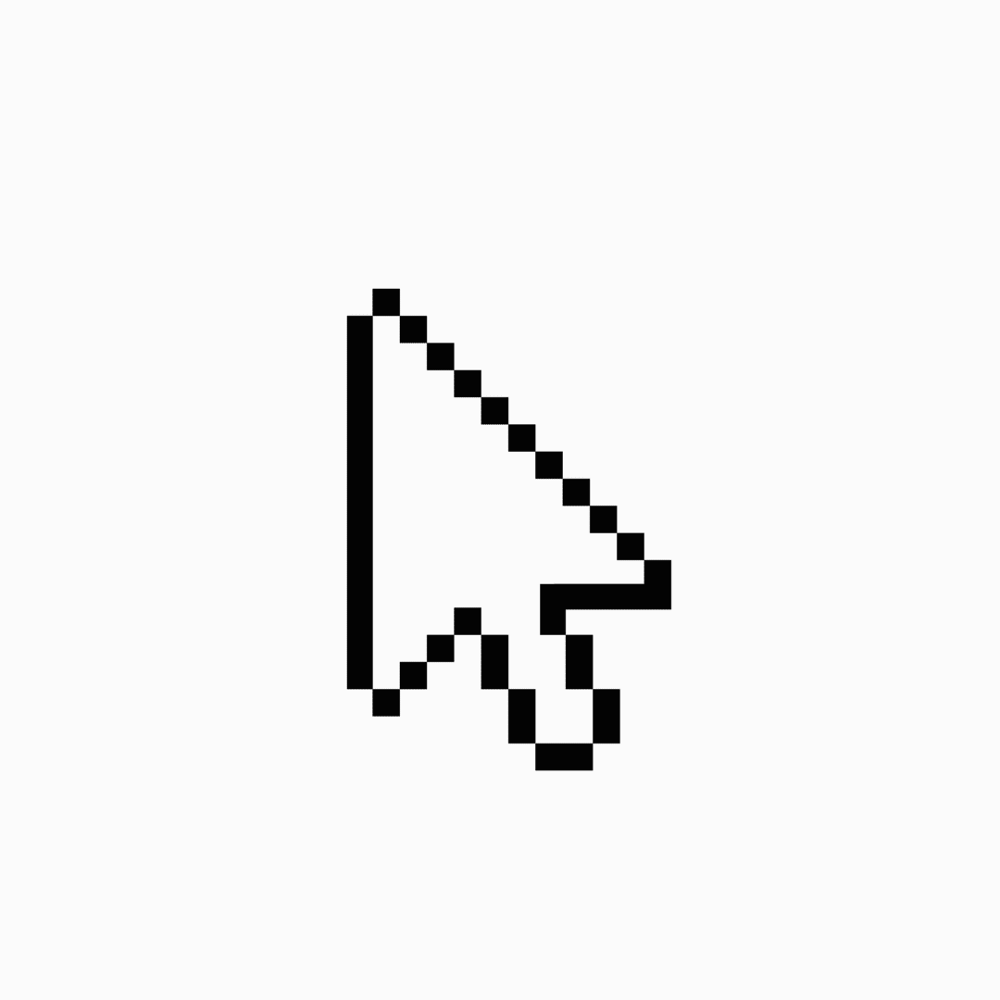

think
design
develop

design
Mivel sok évnyi freelancer tapasztalot tudhatunk magunk mögött, illetve lehetőségünk volt magunkat kipróbálni a gasztro, zene, sport vagy akár a kulturális élet vizuális világában.
Így bátran mondhatjuk, hogy kevés olyan helyzettel szembesülünk, ami komfortzónánkon kívül esik.
- arculattervezés
- web design
- UI design
- illusztráció
- mozgó grafikák (motion design)
fejlesztés
Szeretnéd kibővíteni offline üzleti tevékenységed egy online csatornára?
Szeretnél egy összetettebb infrastrukturát az általad forgalmazott termék(ek) értékesítéséhez?
Megkeressük és elkészítjük a megfelelő professzionális, műszaki és koncepcionális megoldásokat a weboldaladhoz, így magasabb minőséget tudsz Te is nyújtani ügyfeleinek.
- HTML/CSS/JS
- React
- WordPress/PHP/MySQL
- Liquid (Shopify)
javítás/support
Segítségre szorulsz meglévő weboldaladdal? Sokszor keresnek meg minket már félig elkészült munkákkal, vagy korábban teljesen elkészült projektekkel, amik már nem tündökölnek régi fényükben.
Voltak már ügyfeleink, akiknél ezekhez hasonló problémák merültek fel:
- félkész design
- félkész arculat
- lassú weboldal
- egyéb technikai segítség
- hibás funkciók javítása
folyamat
Nem számít, milyen projekttel találjuk magunkat szemben, megközelítésünk mindig köt minket alapelveinkhez. Nem hiszünk a tucat design-ban és indokolatlan funkciókban.
Szeretünk és akarunk is koncepcióval dolgozni és elmagyarázni minden lépésünket, ötletünket gyakorlati és vizuális szempontból, úgy hogy a Te igényeid is teret kapjanak.
kliensek


rólunk
A HAROM.studio 2017-ben alakult. Online és offline termékeket gyártunk minden platformra.
Megközelítésünk és fentebb megfogalmazott módszereink lehetővé teszik számunkra, hogy külső nézőpontból is megismerjük közönséged és céljaid, valamint ösztönöz minket, hogy új, hatékony megoldásokat találjunk ki.